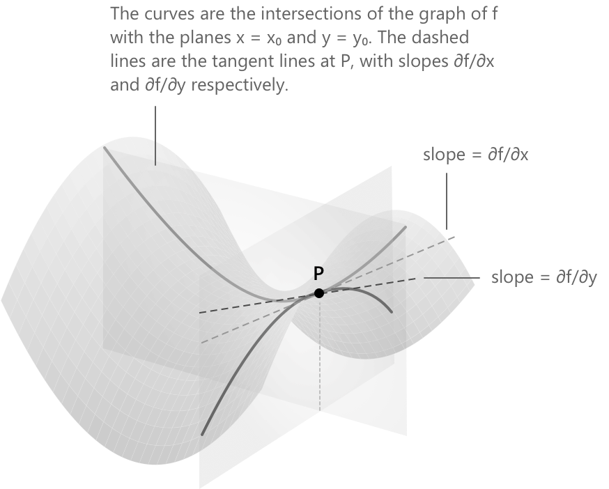

Частинні похідні
Означення
Часткові похідні узагальнюють поняття похідної для функцій від кількох дійсних змінних. Для функції однієї змінної похідна кількісно визначає швидкість зміни значення функції вздовж єдиного доступного напрямку. У контексті кількох змінних необхідно вказати змінну, відносно якої обчислюється швидкість зміни, тримаючи всі інші змінні сталими. Формально:
-
Нехай \( f : A \subseteq \mathbb{R}^n \to \mathbb{R} \) позначає функцію, визначену на відкритій множині \( A \).
-
Нехай \( x_0 = (x_1^0, \ldots, x_n^0) \in A \) є фіксованою точкою.
Часткова похідна \( f \) відносно змінної \( x_i \) у точці \( x_0 \) визначається як така границя:
\[ \frac{\partial f}{\partial x_i}(x_0) \;=\; \lim_{h \to 0} \frac{f(x_1^0, \ldots, x_i^0 + h, \ldots, x_n^0) - f(x_0)}{h} \]
Це означення застосовне тоді, коли границя існує і є скінченною. У таких випадках кажуть, що \( f \) є частково диференційовною відносно \( x_i \) у точці \( x_0 \).
Позначення є аналогічним до позначення звичайної похідної:
\[ f’(c) = \lim_{h \to 0} \frac{f(c+h) – f(c)}{h} \]
Для часткової похідної символ \( \partial \) вказує на те, що змінюється лише одна координата. Поширені альтернативні позначення включають \( \partial_{x_i} f(x_0) \) та \( f_{x_i}(x_0) \). З обчислювальної точки зору, знаходження \( \partial f/\partial x_i \) передбачає диференціювання \( f \) відносно \( x_i \) за допомогою стандартних правил диференціювання, розглядаючи всі інші змінні як сталі.
Розглянемо випадок: \( f : A \subseteq \mathbb{R}^2 \to \mathbb{R} \), де \( A \) є відкритою множиною і \( (x_0, y_0) \in A \). Дві часткові похідні визначаються як:
\[ \frac{\partial f}{\partial x}(x_0, y_0) = \lim_{h \to 0} \frac{f(x_0 + h, y_0) - f(x_0, y_0)}{h} \]
\[ \frac{\partial f}{\partial y}(x_0, y_0) = \lim_{h \to 0} \frac{f(x_0, y_0 + h) - f(x_0, y_0)}{h} \]
Геометрично \( \frac{\partial f}{\partial x}(x_0, y_0) \) представляє кутовий коефіцієнт кривої, утвореної перетином графіка \( f \) з площиною \( y = y_0 \), тоді як \( \frac{\partial f}{\partial y}(x_0, y_0) \) відповідає кутовому коефіцієнту перетину з площиною \( x = x_0 \). Вздовж кожної з цих кривих \( f \) стає функцією однієї дійсної змінної.

Наприклад, розглянемо функцію двох змінних:
\[ f(x, y) = x^3 y^2 - \sin(xy) \]
Розглядаючи \( y \) та \( x \) по черзі як сталі, отримаємо:
\[ \begin{align} \frac{\partial f}{\partial x} &= 3x^2 y^2 – y\cos(xy) \\[6pt] \frac{\partial f}{\partial y} &= 2x^3 y – x\cos(xy) \end{align} \]
Перший вираз отримано шляхом диференціювання \( f \) відносно \( x \), тримаючи \( y \) сталою. Другий вираз отримано шляхом диференціювання відносно \( y \), тримаючи \( x \) сталою. В обох випадках застосовуються стандартні правила диференціювання, такі як степеневе правило та правило похідної складеної функції, як і в контексті однієї змінної.
Приклад 1
Щоб проілюструвати процес часткового диференціювання, розглянемо функцію трьох змінних замість двох. Додавання додаткової змінної не створює концептуальних складнощів, і процедура залишається незмінною. Цей приклад роз'яснює, як кожна змінна розглядається незалежно, а інші змінні вважаються сталими. Наприклад, обчислимо часткові похідні наступної функції:
\[ f(x, y, z) = e^{x^2 z} \ln(1 + y^2 z) \]
Диференціювання відносно \( x \) є простим. Тут \( y \) та \( z \) розглядаються як сталі, тому \( \ln(1 + y^2 z) \) виноситься за знак похідної, а до \( e^{x^2 z} \) застосовується правило похідної складеної функції з внутрішньою функцією \( x^2 z \):
\[ \frac{\partial f}{\partial x} = 2xz\, e^{x^2 z} \ln(1 + y^2 z) \]
Похідна відносно \( y \) має схожу структуру, але діє на інший множник. У цьому випадку \( e^{x^2 z} \) слугує постійним множником, і правило похідної складеної функції застосовується до \( \ln(1 + y^2 z) \) з внутрішньою функцією \( 1 + y^2 z \):
\[ \frac{\partial f}{\partial y} = \frac{2yz\, e^{x^2 z}}{1 + y^2 z} \]
Похідна відносно \( z \) є найскладнішою з трьох випадків. Оскільки жоден множник не є сталлю відносно \( z \), необхідно застосувати правило добутку. Експоненціальний член \( e^{x^2 z} \) дає \( x^2 e^{x^2 z} \) як свою похідну, тоді як \( \ln(1 + y^2 z) \) дає \( \frac{y^2}{1 + y^2 z} \):
\[ \frac{\partial f}{\partial z} = x^2 e^{x^2 z} \ln(1 + y^2 z) + \frac{y^2\, e^{x^2 z}}{1 + y^2 z} \]
Часткові похідні вищих порядків
Якщо часткові похідні є диференційовними функціями на \( A \), їх можна далі диференціювати за будь-якою змінною \( x_j \), що призводить до часткових похідних другого порядку. Для функції двох змінних \( f(x, y) \) існує чотири можливі часткові похідні другого порядку:
\[ \frac{\partial^2 f}{\partial x^2} \qquad \frac{\partial^2 f}{\partial y^2} \qquad \frac{\partial^2 f}{\partial y \,\partial x} \qquad \frac{\partial^2 f}{\partial x \,\partial y} \]
Останні дві називаються мішаними частковими похідними. Вони відрізняються послідовністю диференціювання:
-
У \( \dfrac{\partial^2 f}{\partial y \,\partial x} \) диференціювання спочатку виконується за \( x \), а потім за \( y \).
-
У \( \dfrac{\partial^2 f}{\partial x \,\partial y} \) порядок диференціювання зворотний: диференціювання спочатку виконується за \( y \), потім за \( x \).
Розглянемо функцію \( f(x, y) = x^3 \sin(xy) \), щоб обчислити всі чотири часткові похідні другого порядку. Почнемо з визначення часткових похідних першого порядку:
\[ \begin{align} \frac{\partial f}{\partial x} &= 3x^2 \sin(xy) + x^3 y \cos(xy) \\[6pt] \frac{\partial f}{\partial y} &= x^4 \cos(xy) \end{align} \]
Чотири похідні другого порядку отримуємо, диференціюючи кожну похідну першого порядку за відповідною змінною. Диференціювання \( \frac{\partial f}{\partial x} \) за \( x \) потребує застосування правила добутку двічі:
\[ \begin{align} \frac{\partial^2 f}{\partial x^2} &= 6x \sin(xy) + 3x^2 y \cos(xy) + 3x^2 y \cos(xy) – x^3 y^2 \sin(xy) \\[6pt] &= 6x \sin(xy) + 6x^2 y \cos(xy) - x^3 y^2 \sin(xy) \end{align} \]
Диференціювання \( \frac{\partial f}{\partial y} \) за \( y \) є простішим завдяки простішій структурі:
\[ \frac{\partial^2 f}{\partial y^2} = -x^5 \sin(xy) \]
Для мішаних похідних, диференціювання \( \frac{\partial f}{\partial x} \) за \( y \) дає:
\[ \begin{align} \frac{\partial^2 f}{\partial y \,\partial x} &= 3x^2 \cdot x\cos(xy) + x^3 \cos(xy) – x^3 y \cdot x \sin(xy) \\[6pt] &= 4x^3 \cos(xy) - x^4 y \sin(xy) \end{align} \]
Аналогічно, диференціювання \( \frac{\partial f}{\partial y} \) за \( x \) дає:
\[ \frac{\partial^2 f}{\partial x \,\partial y} = 4x^3 \cos(xy) – x^4 y \sin(xy) \]
Теорема Шварца
Теорема Шварца розглядає питання про те, чи впливає порядок диференціювання на обчислення мішаних часткових похідних. Фундаментальний результат аналізу встановлює, що за відповідних умов регулярності порядок не має значення. Зокрема, теорема Шварца стверджує наступне.
Нехай \( f : A \subseteq \mathbb{R}^2 \to \mathbb{R} \) — функція, для якої мішані часткові похідні існують на \( A \) і є неперервними в точці \( (x_0, y_0) \in A \). Тоді ці мішані похідні рівні в цій точці: \[ \frac{\partial^2 f}{\partial y \,\partial x}(x_0, y_0) \;=\; \frac{\partial^2 f}{\partial x \,\partial y}(x_0, y_0) \]
Неперервність мішаних часткових похідних є істотною гіпотезою в теоремі Шварца. Існують функції, для яких обидві мішані похідні існують, але є розривними, що призводить до різних значень у певних точках. Класичний контрприклад наведено нижче.
\[ f(x,y) = \begin{cases} xy \,\dfrac{x^2 - y^2}{x^2 + y^2} & (x,y) \neq (0,0) \\[8pt] 0 & (x,y) = (0,0) \end{cases} \]
Обидві мішані часткові похідні існують у початку координат і можуть бути обчислені безпосередньо з їхніх означень. Щоб обчислити \( \frac{\partial^2 f}{\partial y \,\partial x}(0,0) \), спочатку обчислимо
\[ \begin{align} \frac{\partial f}{\partial x}(0,y) &= \lim_{h \to 0} \frac{f(h,y) - f(0,y)}{h} \\[8pt] &= \lim_{h \to 0} \frac{hy\,\dfrac{h^2 – y^2}{h^2 + y^2}}{h} \\[10pt] &= \lim_{h \to 0} y\,\frac{h^2 – y^2}{h^2 + y^2} \\[8pt] &= -y \end{align} \]
Далі, диференціюючи за \( y \) у початку координат:
\[ \frac{\partial^2 f}{\partial y \,\partial x}(0,0) = \frac{\partial}{\partial y}(-y)\bigg|_{y=0} = -1 \]
Аналогічне обчислення у зворотному порядку дає:
\[ \frac{\partial f}{\partial y}(x,0) = x \qquad \frac{\partial^2 f}{\partial x \,\partial y}(0,0) = \frac{\partial}{\partial x}(x)\bigg|_{x=0} = +1 \]
Отже, дві мішані похідні набувають протилежних значень у початку координат, що підтверджує, що висновок теореми Шварца не виконується, коли гіпотеза неперервності не задоволена:
\[ \frac{\partial^2 f}{\partial y \,\partial x}(0,0) = -1 \neq +1 = \frac{\partial^2 f}{\partial x \,\partial y}(0,0) \]
Градієнт
Якщо \( f : A \subseteq \mathbb{R}^n \to \mathbb{R} \) є частково диференційовною відносно кожної змінної в точці \( x_0 \in A \), сукупність усіх часткових похідних утворює вектор, відомий як градієнт \( f \) у точці \( x_0 \). Цей градієнт позначається як \( \nabla f(x_0) \) або \( \operatorname{grad} f(x_0) \):
\[ \nabla f(x_0) \;=\; \left( \frac{\partial f}{\partial x_1}(x_0),\; \frac{\partial f}{\partial x_2}(x_0),\; \ldots,\; \frac{\partial f}{\partial x_n}(x_0) \right) \in \mathbb{R}^n \]
Градієнт є фундаментальним у багатовимірному аналізі, оскільки він забезпечує оптимальну лінійну апроксимацію зміни \( f \) біля \( x_0 \), а його напрямок вказує напрямок найшвидшого зростання. Точне значення цієї лінійної апроксимації роз'яснено в означенні диференційовності нижче.
Ця геометрична властивість також є основою градієнтного спуску — ітеративного алгоритму оптимізації, що широко використовується в машинному навчанні для мінімізації функцій втрат шляхом руху в напрямку, протилежному до градієнта.
Диференційовність та повний диференціал
Існування часткових похідних у точці, як правило, не гарантує диференційовності. Диференційовність є сильнішою умовою, яка вимагає, щоб функція допускала лінійну апроксимацію в заданій точці. Функція \( f : A \subseteq \mathbb{R}^n \to \mathbb{R} \) є диференційовною в \( x_0 \in A \), якщо існує лінійне відображення \( L : \mathbb{R}^n \to \mathbb{R} \), таке що:
\[ \lim_{h \to 0} \frac{f(x_0 + h) – f(x_0) – L(h)}{|h|} = 0 \]
Лінійне відображення \( L \) визначене однозначно і має вигляд:
\[ L(h) = \nabla f(x_0) \cdot h \]
Диференційовність означає, що в околі \( x_0 \) функція допускає наступний розклад:
\[ f(x_0 + h) = f(x_0) + \nabla f(x_0) \cdot h + o(|h|) \]
У цій формулі \( o(|h|) \) позначає доданок, що зникає швидше за \( |h| \) при \( h \to 0 \). Лінійне відображення \( h \mapsto \nabla f(x_0) \cdot h \) називається повним диференціалом \( f \) у точці \( x_0 \).
Матриця Якобі
Розглянемо функцію, що набуває векторних значень, а саме \( f : A \subseteq \mathbb{R}^n \to \mathbb{R}^m \) з \( f = (f_1, \ldots, f_m) \). Можна обчислити часткову похідну кожного компонента \( f_k \) відносно кожної змінної \( x_j \). Матриця Якобі функції \( f \) у точці \( x_0 \) систематизує цю інформацію і визначається як матриця розміру \( m \times n \):
\[ J_{f}(x_0) \;=\; \begin{pmatrix} \dfrac{\partial f_1}{\partial x_1}(x_0) & \cdots & \dfrac{\partial f_1}{\partial x_n}(x_0) \\[10pt] \vdots & \ddots & \vdots \\[4pt] \dfrac{\partial f_m}{\partial x_1}(x_0) & \cdots & \dfrac{\partial f_m}{\partial x_n}(x_0) \end{pmatrix} \]
\( k \)-й рядок \( J_{f}(x_0) \) відповідає градієнту \( \nabla f_k(x_0) \). Коли \( m = 1 \), матриця Якобі зводиться до вектора-рядка, що еквівалентно градієнту \( f \).
Похідні за напрямком
Часткова похідна відносно \( x_i \) представляє собою конкретний випадок ширшого поняття похідної за напрямком, взятої в напрямку \( i \)-го канонічного базисного вектора \( e_i \). Для будь-якого одиничного вектора \( v \in \mathbb{R}^n \) з \( |v| = 1 \), похідна \( f \) за напрямком \( v \) у точці \( x_0 \) визначається наступним чином:
\[ D_{v} f(x_0) \;=\; \lim_{t \to 0} \frac{f(x_0 + tv) - f(x_0)}{t} \]
Якщо \( f \) є диференційовною в \( x_0 \), виконується наступна формула:
\[ D_{v} f(x_0) \;=\; \nabla f(x_0) \cdot v \;=\; \sum_{i=1}^n \frac{\partial f}{\partial x_i}(x_0)\, v_i \]
Крапка позначає евклідове скалярне произведение в \( \mathbb{R}^n \). Вибір \( v = e_i \) дає \( \frac{\partial f}{\partial x_i}(x_0) \), що узгоджується з початним означенням часткової похідної. Ця формула є правильною лише тоді, коли \( f \) є диференційовною в \( x_0 \), а не просто тоді, коли існують часткові похідні.
Правило ланцюга в багатовимірному численнях
Правило ланцюга для складених функцій є фундаментальним у багатовимірному аналізі. Припустимо, що \( g : U \subseteq \mathbb{R}^k \to \mathbb{R}^n \) є диференційовною в \( t_0 \in U \), а \( f : A \subseteq \mathbb{R}^n \to \mathbb{R} \) є диференційовною в \( x_0 = g(t_0) \in A \). Тоді складена функція \( h = f \circ g \) є диференційовною в \( t_0 \), і її часткова похідна відносно \( t_j \) задається як:
\[ \frac{\partial h}{\partial t_j}(t_0) \;=\; \sum_{i=1}^n \frac{\partial f}{\partial x_i}(x_0)\, \frac{\partial g_i}{\partial t_j}(t_0) \]
У матричному записі цей зв'язок можна виразити як:
\[ J_h(t_0) \;=\; J_f(x_0)\, J_g(t_0) \]
Ця формула представляє добуток матриць Якобі у правильному порядку. У конкретному випадку, коли \( k = 1 \) і \( g(t) \) визначає криву, формула зводиться до стандартної похідної \( h(t) = f(g(t)) \):
\[ \frac{d}{dt} f(g(t))\bigg|_{t=t_0} \;=\; \nabla f(g(t_0)) \cdot g’(t_0) \]
Класи гладкості
Кажуть, що функція \( f \) належить до класу \( C^1 \) на відкритій множині \( A \), що позначають \( f \in C^1(A) \), якщо всі часткові похідні першого порядку існують і є неперервними на \( A \). Загалом, \( f \in C^k(A) \), якщо всі часткові похідні до порядку \( k \) існують і є неперервними на \( A \). Позначення \( f \in C^\infty(A) \) вказує на те, що \( f \in C^k(A) \) для кожного \( k \geq 1 \).
-
Функції класу \( C^1 \) мають важливу властивість: неперервність часткових похідних забезпечує диференційовність. Зокрема, якщо \( f \in C^1(A) \), то \( f \) є диференційовною в кожній точці \( A \). Однак ця умова є достатньою, але не необхідною, оскільки існують диференційовні функції, чиї часткові похідні не є неперервними.
-
Для функцій класу \( C^2 \) теорема Шварца застосовується автоматично, оскільки необхідна неперервність припускається за визначенням. Відповідно, рівність мішаних часткових похідних виконується в усій множині \( A \).
Матриця Гессе
Нехай задано функцію \( f : A \subseteq \mathbb{R}^n \to \mathbb{R} \) класу \( C^2 \), визначену на відкритій множині \( A \); тоді часткові похідні другого порядку можна розташувати в одну квадратну матрицю. Матрицею Гессе функції \( f \) у точці \( x_0 \in A \) називають симетричну матрицю розміром \( n \times n \), визначену наступним чином:
\[ H_f(x_0) \;=\; \begin{pmatrix} \dfrac{\partial^2 f}{\partial x_1^2}(x_0) & \cdots & \dfrac{\partial^2 f}{\partial x_1 \,\partial x_n}(x_0) \\[10pt] \vdots & \ddots & \vdots \\[4pt] \dfrac{\partial^2 f}{\partial x_n \,\partial x_1}(x_0) & \cdots & \dfrac{\partial^2 f}{\partial x_n^2}(x_0) \end{pmatrix} \]
Елемент у позиції \( (j, k) \) задається як:
\[ \frac{\partial^2 f}{\partial x_j \,\partial x_k}(x_0) \]
Оскільки \( f \in C^2(A) \), теорема Шварца гарантує, що всі мішані часткові похідні рівні, тому матриця Гессе є симетричною:
\[ H_f(x_0) = H_f(x_0)^T \]
Матриця Гессе є фундаментальною для аналізу \( f \) другого порядку. У критичній точці \( x_0 \), де \( \nabla f(x_0) = 0 \), визначеність \( H_f(x_0) \) визначає характер точки: якщо \( H_f(x_0) \) є додатно визначеною, то \( x_0 \) є локальним мінімумом; якщо від'ємно визначеною — локальним максимумом; якщо невизначеною — сідловою точкою. Цей результат узагальнює тест другої похідної для функцій кількох змінних, як це обговорюється в статті про точки максимуму, мінімуму та точки перегину.
Вибрана література
-
MIT OCW, A. Mattuck. Partial Derivatives and Multivariable Calculus
-
Harvard University, O. Knill. Partial Derivatives
-
UC Berkeley, N. Srivastava. The Multivariable Chain Rule
-
UC Berkeley. Multivariable Calculus Worksheets
-
City University of New York, A. Máté. On the Equality of Mixed Partial Derivatives